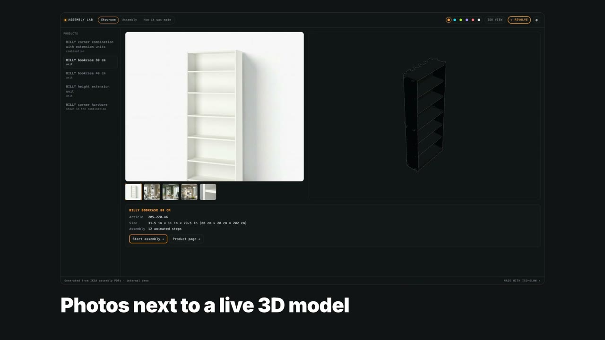
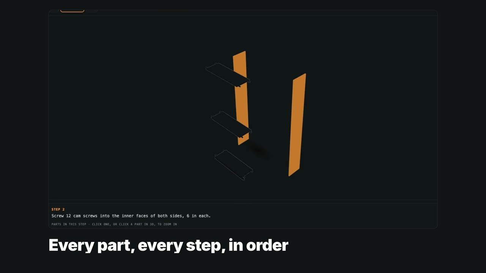
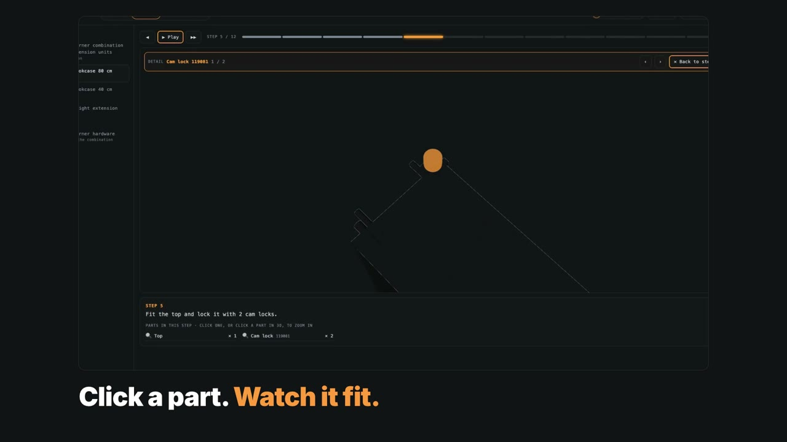
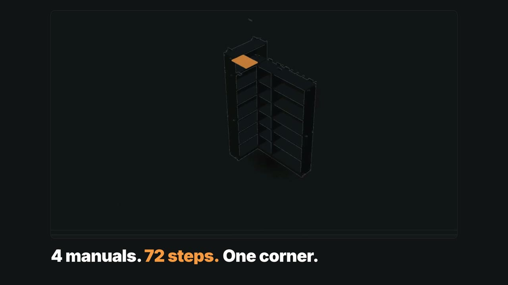
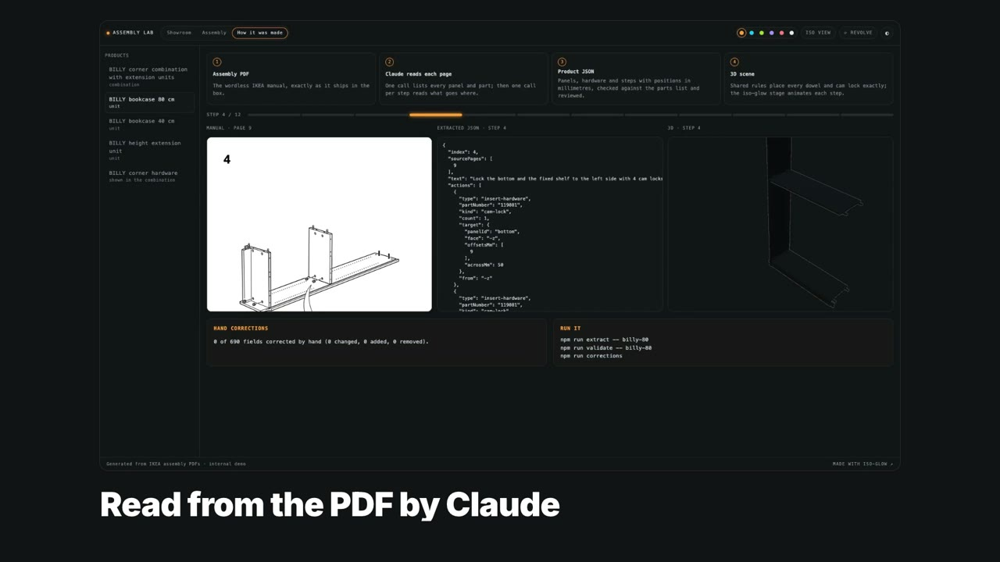

Internal demo · BILLY bookcase family
Assembly Guide reads IKEA's wordless PDF manuals and turns them into an interactive 3D showroom and an animated, step-by-step assembly guide, down to every dowel, cam lock and nail.
From the paper manual to the live app: Showroom, Assembly, part zoom, the corner combination and how it was made. Recorded from the real app.
What's in the app

Product photos next to the assembled 3D model. Drag to orbit, switch to a true isometric view, let it revolve, pick the accent colour or the light theme.

The manual's steps play in order. Parts fly in and seat; the part that moves glows. Play, pause, step back and forth, or jump to any step.

Click any part in the list or in 3D. The camera comes in from the side the part arrives from and replays its fit in slow motion.

The BILLY corner combination is built from four manuals: two bookcase widths, the height extension and the corner hardware, joined in 72 steps.

Every step shows the manual page it came from, the data that was extracted and the 3D result, plus how many fields were corrected by hand.
How it works
What's next
Ideas to explore, not features of this demo.
Run it
# Node 22+ git clone https://github.com/jacksonmafra-umain/assembly-guide cd assembly-guide npm install npm run dev # http://localhost:5173 # re-extract a product from its PDF (needs Claude API credentials) npm run extract -- billy-80